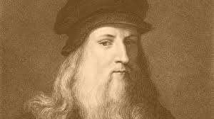

Soy Francisco, en general mi vida solo se ha basado en estudiar para lograr lo que me propongo. Nací en zapopan jalisco, el 28 de julio de 1998, de ahí mi infancia tuvo muchas compricaciones gracias a que era muy enfermizo y se se detuvo al rededor de mi 5 años de edad. A un así hice mi formación académica como se debe fui´ al quinder, cercano a mi casa, ahora no recuerdo como se llama. Estudié la primaria en el colegio Bernardette de Lourdes un escula catolica, posteriormente entre a EST #142, hice la preparatoria en preparatoria #20 de la UDG
Llegando a la universidad me dí cuenta que todo lo que pase de formación académica fué realtivamente facil a comparacion de lo que veo en estos momentos pero esto no me dasanima ni un poco ya que mi meta es lograr hacer grandes proyectos. Antes de entrar a esta carrera también quise entrar en medicina pero lamentablemente no tengo la capacidad para haber quedado, pero no es no me guste lo que tengo si no simplemente infomática y medicina eran las más llamativas
Admiro este personaje por que aporto mucho a la ciencia y también al arte, me gusta demasiado su pintura y estilo, además
tuvo una que otra invensión que aunque no uy reconocida era interesante Leornardo fué el mejor

| intereses | categoria |
|---|---|
| Tocar guitarra | Oscio |
| Jugar | Oscio |
| Aprender ingles | Fomación |